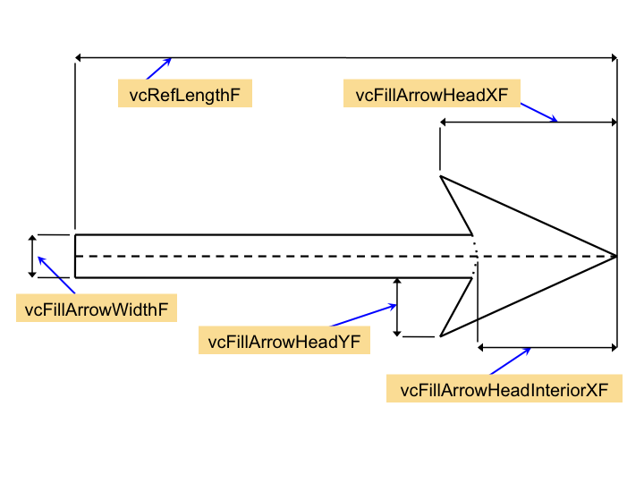

{kind=link}
{kind=link}
{kind=link}
VectorPlot class
The VectorPlot class represents a vector field by drawing arrows at points of a grid.Synopsis
Header file: ncarg/hlu/VectorPlot.h Class name: vectorPlotClass Class pointer: NhlvectorPlotClass Fortran class function: NHLFVECTORPLOTCLASS Superclass: DataComm Composite classes: LogLinTransformation, IrregularTransformation, CurvilinearTransformation, SphericalTransformation, PlotManager Data specific class Class name: vectorPlotDataDepClass Class pointer: NhlvectorPlotDataDepClass Fortran class function: NHLFVECTORPLOTDATADEPCLASS Superclass: DataSpec
Class-defined types
Type name: NhlTVectorPositionMode Definition: typedef enum _NhlVectorPositionMode { NhlARROWHEAD = 0, /* ArrowHead */ NhlARROWTAIL = 1, /* ArrowTail */ NhlARROWCENTER = 2 /* ArrowCenter */ } NhlVectorPositionMode; Type name: NhlTVectorGlyphStyle Definition: typedef enum _NhlVectorGlyphStyle { NhlLINEARROW = 0, /* LineArrow */ NhlFILLARROW = 1, /* FillArrow */ NhlWINDBARB = 2, /* WindBarb */ NhlCURLYVECTOR = 3 /* CurlyVector */ } NhlVectorGlyphStyle;
Resources
Local resources
+---------------------------------------------------------------+ | VectorPlot Resource Set | |---------------------------------------------------------------| | NAME TYPE ACCESS | | CLASS DEFAULT | |===============================================================| | vcVectorFieldData NhlTInteger RCSG | | VcVectorFieldData <none> | |---------------------------------------------------------------| | vcScalarFieldData NhlTInteger RCSG | | VcScalarFieldData <none> | |---------------------------------------------------------------| | vcMapDirection NhlTBoolean RCSG | | VcMapDirection True | |---------------------------------------------------------------| | vcPositionMode NhlTVectorPositionMode RCSG | | VcPositionMode "ArrowCenter" | |---------------------------------------------------------------| | vcVectorDrawOrder NhlTDrawOrder RCSG | | VcVectorDrawOrder "Draw" | |---------------------------------------------------------------| | vcGlyphStyle NhlTVectorGlyphStyle RCSG | | VcGlyphStyle "LineArrow" | |---------------------------------------------------------------| | vcMinDistanceF NhlTFloat RCSG | | VcMinDistanceF 0.0 | |---------------------------------------------------------------| | vcMinMagnitudeF NhlTFloat RCSG | | VcMinMagnitudeF 0.0 | |---------------------------------------------------------------| | vcMaxMagnitudeF NhlTFloat RCSG | | VcMaxMagnitudeF 0.0 | |---------------------------------------------------------------| | vcRefMagnitudeF NhlTFloat RCSG | | VcRefMagnitudeF 0.0 | |---------------------------------------------------------------| | vcRefLengthF NhlTFloat RCSG | | VcRefLengthF <dynamic> | |---------------------------------------------------------------| | vcMinFracLengthF NhlTFloat RCSG | | VcMinFracLengthF 0.0 | |---------------------------------------------------------------| | vcLevels NhlTFloatGenArray RCSG | | Levels <dynamic> | |---------------------------------------------------------------| | vcLevelCount NhlTInteger RCSG | | VcLevelCount 16 | |---------------------------------------------------------------| | vcLevelSelectionMode NhlTLevelSelectionMode RCSG | | LevelSelectionMode "AutomaticLevels" | |---------------------------------------------------------------| | vcMaxLevelCount NhlTInteger RCSG | | MaxLevelCount 16 | |---------------------------------------------------------------| | vcLevelSpacingF NhlTFloat RCSG | | LevelSpacingF <dynamic> | |---------------------------------------------------------------| | vcMinLevelValF NhlTFloat RCSG | | MinLevelValF <dynamic> | |---------------------------------------------------------------| | vcMaxLevelValF NhlTFloat RCSG | | MaxLevelValF <dynamic> | |---------------------------------------------------------------| | vcSpanLevelPalette NhlTBoolean RCSG | | VcSpanLevelPalette True | |---------------------------------------------------------------| | vcLevelPalette NhlTColorDefinitionGenArray RCSG | | VcLevelPalette <None> | |---------------------------------------------------------------| | vcLevelColors NhlTColorIndexGenArray RCSG | | VcLevelColors <dynamic> | |---------------------------------------------------------------| | vcUseScalarArray NhlTBoolean RCSG | | VcUseScalarArray False | |---------------------------------------------------------------| | vcScalarMissingValColor NhlTColorIndex RCSG | | VcScalarMissingValColor "Foreground" | |---------------------------------------------------------------| | vcMonoLineArrowColor NhlTBoolean RCSG | | VcMonoLineArrowColor True | |---------------------------------------------------------------| | vcLineArrowColor NhlTColorIndex RCSG | | LineColor "Foreground" | |---------------------------------------------------------------| | vcLineArrowThicknessF NhlTFloat RCSG | | LineThicknessF 1.0 | |---------------------------------------------------------------| | vcLineArrowHeadMinSizeF NhlTFloat RCSG | | VcLineArrowHeadMinSizeF 0.005 | |---------------------------------------------------------------| | vcLineArrowHeadMaxSizeF NhlTFloat RCSG | | VcLineArrowHeadMaxSizeF <dynamic> | |---------------------------------------------------------------| | vcFillArrowsOn NhlTBoolean RCSG | | VcFillArrowsOn False | |---------------------------------------------------------------| | vcMonoFillArrowFillColor NhlTBoolean RCSG | | VcMonoFillArrowFillColor True | |---------------------------------------------------------------| | vcFillArrowFillColor NhlTColorIndex RCSG | | FillColor "Foreground" | |---------------------------------------------------------------| | vcFillOverEdge NhlTBoolean RCSG | | VcFillOverEdge True | |---------------------------------------------------------------| | vcMonoFillArrowEdgeColor NhlTBoolean RCSG | | VcMonoFillArrowEdgeColor True | |---------------------------------------------------------------| | vcFillArrowEdgeColor NhlTColorIndex RCSG | | EdgeColor "Background" | |---------------------------------------------------------------| | vcFillArrowEdgeThicknessF NhlTFloat RCSG | | EdgeThicknessF 2.0 | |---------------------------------------------------------------| | vcFillArrowWidthF NhlTFloat RCSG | | VcFillArrowWidthF 0.1 | |---------------------------------------------------------------| | vcFillArrowMinFracWidthF NhlTFloat RCSG | | VcFillArrowMinFracWidthF 0.25 | |---------------------------------------------------------------| | vcFillArrowHeadXF NhlTFloat RCSG | | VcFillArrowHeadXF 0.36 | |---------------------------------------------------------------| | vcFillArrowHeadMinFracXF NhlTFloat RCSG | | VcFillArrowHeadMinFracXF 0.25 | |---------------------------------------------------------------| | vcFillArrowHeadInteriorXF NhlTFloat RCSG | | VcFillArrowHeadInteriorXF 0.33 | |---------------------------------------------------------------| | vcFillArrowHeadYF NhlTFloat RCSG | | VcFillArrowHeadYF 0.12 | |---------------------------------------------------------------| | vcFillArrowHeadMinFracYF NhlTFloat RCSG | | VcFillArrowHeadMinFracYF 0.25 | |---------------------------------------------------------------| | vcMonoWindBarbColor NhlTBoolean RCSG | | VcMonoWindBarbColor True | |---------------------------------------------------------------| | vcWindBarbColor NhlTColorIndex RCSG | | LineColor "Foreground" | |---------------------------------------------------------------| | vcWindBarbLineThicknessF NhlTFloat RCSG | | LineThicknessF 1.0 | |---------------------------------------------------------------| | vcWindBarbTickAngleF NhlTFloat RCSG | | VcWindBarbTickAngleF 62.0 | |---------------------------------------------------------------| | vcWindBarbTickLengthF NhlTFloat RCSG | | VcWindBarbTickLengthF 0.3 | |---------------------------------------------------------------| | vcWindBarbTickSpacingF NhlTFloat RCSG | | VcWindBarbTickSpacingF 0.125 | |---------------------------------------------------------------| | vcWindBarbCalmCircleSizeF NhlTFloat RCSG | | VcWindBarbCalmCircleSizeF 0.25 | |---------------------------------------------------------------| | vcWindBarbScaleFactorF NhlTFloat RCSG | | VcWindBarbScaleFactorF 1.0 | |---------------------------------------------------------------| | vcUseRefAnnoRes NhlTBoolean RCSG | | VcUseRefAnnoRes False | |---------------------------------------------------------------| | vcRefAnnoOn NhlTBoolean RCSG | | VcRefAnnoOn True | |---------------------------------------------------------------| | vcRefAnnoOrientation NhlTOrientation RCSG | | VcRefAnnoOrientation "Vertical" | |---------------------------------------------------------------| | vcRefAnnoExplicitMagnitudeF NhlTFloat RCSG | | VcRefAnnoExplicitMagnitudeF 0.0 | |---------------------------------------------------------------| | vcRefAnnoArrowLineColor NhlTColorIndex RCSG | | LineColor "Foreground" | |---------------------------------------------------------------| | vcRefAnnoArrowFillColor NhlTColorIndex RCSG | | FillColor "Foreground" | |---------------------------------------------------------------| | vcRefAnnoArrowEdgeColor NhlTColorIndex RCSG | | EdgeColor "Background" | |---------------------------------------------------------------| | vcRefAnnoArrowUseVecColor NhlTBoolean RCSG | | VcRefAnnoArrowUseVecColor True | |---------------------------------------------------------------| | vcRefAnnoArrowAngleF NhlTFloat RCSG | | VcRefAnnoArrowAngleF 0.0 | |---------------------------------------------------------------| | vcRefAnnoArrowSpaceF NhlTFloat RCSG | | VcRefAnnoArrowSpaceF 2.0 | |---------------------------------------------------------------| | vcRefAnnoArrowMinOffsetF NhlTFloat RCSG | | VcRefAnnoArrowMinOffsetF 0.25 | |---------------------------------------------------------------| | vcRefAnnoString1On NhlTBoolean RCSG | | VcRefAnnoString1On True | |---------------------------------------------------------------| | vcRefAnnoString1 NhlTString RCSG | | VcRefAnnoString1 <dynamic> | |---------------------------------------------------------------| | vcRefAnnoString2On NhlTBoolean RCSG | | VcRefAnnoString2On True | |---------------------------------------------------------------| | vcRefAnnoString2 NhlTString RCSG | | VcRefAnnoString2 <dynamic> | |---------------------------------------------------------------| | vcRefAnnoFontHeightF NhlTFloat RCSG | | FontHeightF <dynamic> | |---------------------------------------------------------------| | vcRefAnnoTextDirection NhlTTextDirection RCSG | | TextDirection "Across" | |---------------------------------------------------------------| | vcRefAnnoFont NhlTFont RCSG | | Font "pwritx" | |---------------------------------------------------------------| | vcRefAnnoFontColor NhlTColorIndex RCSG | | FontColor "Foreground" | |---------------------------------------------------------------| | vcRefAnnoFontAspectF NhlTFloat RCSG | | FontAspectF 1.3125 | |---------------------------------------------------------------| | vcRefAnnoFontThicknessF NhlTFloat RCSG | | FontThicknessF 1.0 | |---------------------------------------------------------------| | vcRefAnnoFontQuality NhlTFontQuality RCSG | | FontQuality "High" | |---------------------------------------------------------------| | vcRefAnnoConstantSpacingF NhlTFloat RCSG | | TextConstantSpacingF 0.0 | |---------------------------------------------------------------| | vcRefAnnoAngleF NhlTFloat RCSG | | TextAngleF 0.0 | |---------------------------------------------------------------| | vcRefAnnoFuncCode NhlTCharacter RCSG | | TextFuncCode : | |---------------------------------------------------------------| | vcRefAnnoBackgroundColor NhlTColorIndex RCSG | | FillBackgroundColor "Background" | |---------------------------------------------------------------| | vcRefAnnoPerimOn NhlTBoolean RCSG | | EdgesOn True | |---------------------------------------------------------------| | vcRefAnnoPerimSpaceF NhlTFloat RCSG | | EdgeBorderWidthF 0.33 | |---------------------------------------------------------------| | vcRefAnnoPerimColor NhlTColorIndex RCSG | | EdgeColor "Foreground" | |---------------------------------------------------------------| | vcRefAnnoPerimThicknessF NhlTFloat RCSG | | EdgeThicknessF 1.0 | |---------------------------------------------------------------| | vcRefAnnoZone NhlTInteger RCSG | | VcRefAnnoZone 4 | |---------------------------------------------------------------| | vcRefAnnoSide NhlTPosition RCSG | | VcRefAnnoSide "Bottom" | |---------------------------------------------------------------| | vcRefAnnoJust NhlTJustification RCSG | | VcRefAnnoJust "TopRight" | |---------------------------------------------------------------| | vcRefAnnoParallelPosF NhlTFloat RCSG | | VcRefAnnoParallelPosF 1.0 | |---------------------------------------------------------------| | vcRefAnnoOrthogonalPosF NhlTFloat RCSG | | VcRefAnnoOrthogonalPosF 0.02 | |---------------------------------------------------------------| | vcMinAnnoOn NhlTBoolean RCSG | | VcMinAnnoOn False | |---------------------------------------------------------------| | vcMinAnnoOrientation NhlTOrientation RCSG | | VcMinAnnoOrientation "Vertical" | |---------------------------------------------------------------| | vcMinAnnoExplicitMagnitudeF NhlTFloat RCSG | | VcMinAnnoExplicitMagnitudeF 0.0 | |---------------------------------------------------------------| | vcMinAnnoArrowLineColor NhlTColorIndex RCSG | | LineColor "Foreground" | |---------------------------------------------------------------| | vcMinAnnoArrowFillColor NhlTColorIndex RCSG | | FillColor "Foreground" | |---------------------------------------------------------------| | vcMinAnnoArrowEdgeColor NhlTColorIndex RCSG | | EdgeColor "Background" | |---------------------------------------------------------------| | vcMinAnnoArrowUseVecColor NhlTBoolean RCSG | | VcMinAnnoArrowUseVecColor True | |---------------------------------------------------------------| | vcMinAnnoArrowAngleF NhlTFloat RCSG | | VcMinAnnoArrowAngleF 0.0 | |---------------------------------------------------------------| | vcMinAnnoArrowSpaceF NhlTFloat RCSG | | VcMinAnnoArrowSpaceF 2.0 | |---------------------------------------------------------------| | vcMinAnnoArrowMinOffsetF NhlTFloat RCSG | | VcMinAnnoArrowMinOffsetF 0.25 | |---------------------------------------------------------------| | vcMinAnnoString1On NhlTBoolean RCSG | | VcMinAnnoString1On True | |---------------------------------------------------------------| | vcMinAnnoString1 NhlTString RCSG | | VcMinAnnoString1 <dynamic> | |---------------------------------------------------------------| | vcMinAnnoString2On NhlTBoolean RCSG | | VcMinAnnoString2On True | |---------------------------------------------------------------| | vcMinAnnoString2 NhlTString RCSG | | VcMinAnnoString2 <dynamic> | |---------------------------------------------------------------| | vcMinAnnoFontHeightF NhlTFloat RCSG | | FontHeightF <dynamic> | |---------------------------------------------------------------| | vcMinAnnoTextDirection NhlTTextDirection RCSG | | TextDirection "Across" | |---------------------------------------------------------------| | vcMinAnnoFont NhlTFont RCSG | | Font "pwritx" | |---------------------------------------------------------------| | vcMinAnnoFontColor NhlTColorIndex RCSG | | FontColor "Foreground" | |---------------------------------------------------------------| | vcMinAnnoFontAspectF NhlTFloat RCSG | | FontAspectF 1.3125 | |---------------------------------------------------------------| | vcMinAnnoFontThicknessF NhlTFloat RCSG | | FontThicknessF 1.0 | |---------------------------------------------------------------| | vcMinAnnoFontQuality NhlTFontQuality RCSG | | FontQuality "High" | |---------------------------------------------------------------| | vcMinAnnoConstantSpacingF NhlTFloat RCSG | | TextConstantSpacingF 0.0 | |---------------------------------------------------------------| | vcMinAnnoAngleF NhlTFloat RCSG | | TextAngleF 0.0 | |---------------------------------------------------------------| | vcMinAnnoFuncCode NhlTCharacter RCSG | | TextFuncCode : | |---------------------------------------------------------------| | vcMinAnnoBackgroundColor NhlTColorIndex RCSG | | FillBackgroundColor "Background" | |---------------------------------------------------------------| | vcMinAnnoPerimOn NhlTBoolean RCSG | | EdgesOn True | |---------------------------------------------------------------| | vcMinAnnoPerimSpaceF NhlTFloat RCSG | | EdgeBorderWidthF 0.33 | |---------------------------------------------------------------| | vcMinAnnoPerimColor NhlTColorIndex RCSG | | EdgeColor "Foreground" | |---------------------------------------------------------------| | vcMinAnnoPerimThicknessF NhlTFloat RCSG | | EdgeThicknessF 1.0 | |---------------------------------------------------------------| | vcMinAnnoZone NhlTInteger RCSG | | VcMinAnnoZone 5 | |---------------------------------------------------------------| | vcMinAnnoSide NhlTPosition RCSG | | VcMinAnnoSide "Bottom" | |---------------------------------------------------------------| | vcMinAnnoJust NhlTJustification RCSG | | VcMinAnnoJust "TopRight" | |---------------------------------------------------------------| | vcMinAnnoParallelPosF NhlTFloat RCSG | | VcMinAnnoParallelPosF 1.0 | |---------------------------------------------------------------| | vcMinAnnoOrthogonalPosF NhlTFloat RCSG | | VcMinAnnoOrthogonalPosF 0.02 | |---------------------------------------------------------------| | vcNoDataLabelOn NhlTBoolean RCSG | | AnnotationLabelsOn True | |---------------------------------------------------------------| | vcNoDataLabelString NhlTString RCSG | | VcNoDataLabelString <dynamic> | |---------------------------------------------------------------| | vcZeroFLabelOn NhlTBoolean RCSG | | AnnotationLabelsOn True | |---------------------------------------------------------------| | vcZeroFLabelString NhlTString RCSG | | VcZeroFLabelString <dynamic> | |---------------------------------------------------------------| | vcZeroFLabelFontHeightF NhlTFloat RCSG | | FontHeightF <dynamic> | |---------------------------------------------------------------| | vcZeroFLabelTextDirection NhlTTextDirection RCSG | | TextDirection "Across" | |---------------------------------------------------------------| | vcZeroFLabelFont NhlTFont RCSG | | Font "pwritx" | |---------------------------------------------------------------| | vcZeroFLabelFontColor NhlTColorIndex RCSG | | FontColor "Foreground" | |---------------------------------------------------------------| | vcZeroFLabelFontAspectF NhlTFloat RCSG | | FontAspectF 1.3125 | |---------------------------------------------------------------| | vcZeroFLabelFontThicknessF NhlTFloat RCSG | | FontThicknessF 1.0 | |---------------------------------------------------------------| | vcZeroFLabelFontQuality NhlTFontQuality RCSG | | FontQuality "High" | |---------------------------------------------------------------| | vcZeroFLabelConstantSpacingF NhlTFloat RCSG | | TextConstantSpacingF 0.0 | |---------------------------------------------------------------| | vcZeroFLabelAngleF NhlTFloat RCSG | | TextAngleF 0.0 | |---------------------------------------------------------------| | vcZeroFLabelFuncCode NhlTCharacter RCSG | | TextFuncCode : | |---------------------------------------------------------------| | vcZeroFLabelBackgroundColor NhlTColorIndex RCSG | | FillBackgroundColor "Background" | |---------------------------------------------------------------| | vcZeroFLabelPerimOn NhlTBoolean RCSG | | EdgesOn True | |---------------------------------------------------------------| | vcZeroFLabelPerimSpaceF NhlTFloat RCSG | | EdgeBorderWidthF 0.33 | |---------------------------------------------------------------| | vcZeroFLabelPerimColor NhlTColorIndex RCSG | | EdgeColor "Foreground" | |---------------------------------------------------------------| | vcZeroFLabelPerimThicknessF NhlTFloat RCSG | | EdgeThicknessF 1.0 | |---------------------------------------------------------------| | vcZeroFLabelZone NhlTInteger RCSG | | VcZeroFLabelZone 0 | |---------------------------------------------------------------| | vcZeroFLabelSide NhlTPosition RCSG | | VcZeroFLabelSide "Bottom" | |---------------------------------------------------------------| | vcZeroFLabelJust NhlTJustification RCSG | | VcZeroFLabelJust "CenterCenter" | |---------------------------------------------------------------| | vcZeroFLabelParallelPosF NhlTFloat RCSG | | VcZeroFLabelParallelPosF 0.0 | |---------------------------------------------------------------| | vcZeroFLabelOrthogonalPosF NhlTFloat RCSG | | VcZeroFLabelOrthogonalPosF 0.0 | |---------------------------------------------------------------| | vcMagnitudeScalingMode NhlTScalingMode RCSG | | VcMagnitudeScalingMode "ScaleFactor" | |---------------------------------------------------------------| | vcMagnitudeScaleValueF NhlTFloat RCSG | | VcMagnitudeScaleValueF 1.0 | |---------------------------------------------------------------| | vcMagnitudeScaleFactorF NhlTFloat RCSG | | VcMagnitudeScaleFactorF 1.0 | |---------------------------------------------------------------| | vcMagnitudeFormat NhlTString RCSG | | NumberFormat "*+^sg" | |---------------------------------------------------------------| | vcScalarValueScalingMode NhlTScalingMode RCSG | | VcScalarValueScalingMode "ScaleFactor" | |---------------------------------------------------------------| | vcScalarValueScaleValueF NhlTFloat RCSG | | VcScalarValueScaleValueF 1.0 | |---------------------------------------------------------------| | vcScalarValueScaleFactorF NhlTFloat RCSG | | VcScalarValueScaleFactorF 1.0 | |---------------------------------------------------------------| | vcScalarValueFormat NhlTString RCSG | | NumberFormat "*+^sg" | |---------------------------------------------------------------| | vcExplicitLabelBarLabelsOn NhlTBoolean RCSG | | VcExplicitLabelBarLabelsOn False | |---------------------------------------------------------------| | vcLabelBarEndLabelsOn NhlTBoolean RCSG | | VcLabelBarEndLabelsOn False | |---------------------------------------------------------------| | vcLabelsOn NhlTBoolean RCSG | | VcLabelsOn False | |---------------------------------------------------------------| | vcLabelsUseVectorColor NhlTBoolean RCSG | | VcLabelsUseVectorColor False | |---------------------------------------------------------------| | vcLabelFontColor NhlTColorIndex RCSG | | FontColor NhlFOREGROUND | |---------------------------------------------------------------| | vcLabelFontHeightF NhlTFloat RCSG | | FontHeightF <dynamic> | +---------------------------------------------------------------+
Data specific resources
The VectorPlot class does not currently use any data specific resources.
Composite resources
Transformation resources
Transformation class resources specify the extent, direction and grid type of the data coordinate system. The Transformation class is the superclass of all classes used to perform data transformations, and you can access all its resources. However, note that VectorPlot intercepts its resources, as follows:-
- trXMinF
- By default trXMinF is set to the minimum data coordinate value along the X Axis, as determined from the contents of the VectorField object.
-
- trXMaxF
- By default trXMaxF is set to the maximum data coordinate value along the X Axis, as determined from the contents of the VectorField object.
-
- trXReverse
- By default trXReverse is set based on the direction of the X Axis implied by the contents of the VectorField object.
-
- trYMinF
- By default trYMinF is set to the minimum data coordinate value along the Y Axis, as determined from the contents of the VectorField object.
-
- trYMaxF
- By default trYMaxF is set to the maximum data coordinate value along the Y Axis, as determined from the contents of the VectorField object.
-
- trYReverse
- By default trYReverse is set based on the direction of the Y Axis implied by the contents of the VectorField object.
-
- trGridType
- trGridType is forced to
LogLinif vfXArray and vfYArray haveNULLvalues in the VectorField object. It is forced toIrregularif vfXArray and/or vfYArray contain 1D coordinate arrays. If vfXArray and vfYArray contain 2D coordinate arrays, trGridType defaults toSphericalbut the user can choose to set it toCurvilinear.
LogLinTransformation resources
The VectorPlot class uses the LogLinTransformation to handle its transformations as long as neither of the VectorField array resources, vfXArray or vfYArray, is set. LogLinTransformation has resources for selecting between linear and logarithmic coordinates for each axis.You can access all LogLinTransformation resources. However, note that VectorPlot intercepts LogLinTransformation resources, as follows:
-
- trXLog
- VectorPlot issues a warning if trXLog
is set True when the set value of trXMinF is less than or
equal to 0.0. In this case it resets trXLog to False. If the
IrregularTransformation resource trXAxisType
is set, VectorPlot sets trXLog True if
trXAxisType is set to
LogAxis. If trXAxisType is set to any other value, it sets trXLog False.
-
- trYLog
- VectorPlot issues a warning if trYLog
is set True when the set value of trYMinF is less than or
equal to 0.0. In this case it resets trYLog to False. If the
IrregularTransformation resource trYAxisType
is set, VectorPlot sets trYLog True if
trYAxisType is set to
LogAxis. If trYAxisType is set to any other value, it sets trYLog False.
IrregularTransformation resources
VectorPlot automatically uses the IrregularTransformation to handle its transformations if the VectorField array resources vfXArray and/or vfYArray are set with one-dimensional arrays, implying that one or both of the coordinate axes is irregularly spaced.All Transformation superclass resources are accessible. However, VectorPlot blocks access to all resources specific to the IrregularTransformation except for:
and for the following intercepted resources:-
- trXAxisType
- If the VectorField resource vfXArray is
non-
NULLand trXAxisType is set to any other value thanIrregularAxis, VectorPlot switches to a coordinate extent bounded by 0 and the length of the X-Axis dimension minus one. If trXAxisType is not set, but the LogLinTransformation resource trXLog is set, VectorPlot sets trXAxisType toLogAxisif trXLog is True; if trXLog is False, it changes trXAxisType toLinearAxisif it had been set toLogAxisand leaves it unchanged otherwise. trXAxisType can be set toLogAxiswithout error only when the X-Axis coordinate extent as passed from the VectorField is entirely positive. If this is not the case, trXAxisType will default toLinearAxis.
-
- trYAxisType
- If the VectorField resource vfYArray is
non-
NULLand trYAxisType is set to any other value thanIrregularAxis, VectorPlot switches to a coordinate extent bounded by 0 and the length of the Y-Axis dimension minus one. If trYAxisType is not set, but the LogLinTransformation resource trYLog is set, VectorPlot sets trYAxisType toLogAxisif trYLog is True; if trYLog is False, it changes trYAxisType toLinearAxisif it had been set toLogAxisand leaves it unchanged otherwise. trYAxisType can be set toLogAxiswithout error only when the Y-Axis coordinate extent as passed from the VectorField is entirely positive. If this is not the case, trYAxisType will default toLinearAxis.
CurvilinearTransformation resources
VectorPlot uses the CurvilinearTransformation to handle its transformations if the VectorField array resources vfXArray and vfYArray are set with two-dimensional arrays and the Transformation class resource trGridType is set toCurvilinear. The
CurvilinearTransformation class has no
user-accessible resources.
SphericalTransformation resources
VectorPlot uses the SphericalTransformation to handle its transformations if the VectorField array resources vfXArray and vfYArray are set with two-dimensional arrays and the Transformation class resource trGridType is set toSpherical. The SphericalTransformation
class has no user-accessible resources.
PlotManager resources
If tfPlotManagerOn is True when a VectorPlot object is created, you can access all PlotManager resources. However, note that VectorPlot intercepts certain PlotManager resources, as follows:-
- pmLabelBarDisplayMode
- The default value of pmLabelBarDisplayMode is set to
Never.
-
- pmLegendDisplayMode
- The pmLegendDisplayMode resource is hard-coded to its default value of NhlNOCREATE in VectorPlot.
-
- pmTickMarkDisplayMode
- The default value of pmTickMarkDisplayMode is set to
Conditional.
-
- pmTitleDisplayMode
- The default value of pmTitleDisplayMode is set to
Conditional.
- TickMark resources as modified by PlotManager
- Title resources as modified by PlotManager
- LabelBar resources as modified by PlotManager
Additional modifications to LabelBar resources
The VectorPlot class disables a number of LabelBar resources, since it sets them automatically based on the current values of certain relevant VectorPlot resources. The disabled resources include:- lbBoxCount
- lbMonoFillColor
- lbFillColor
- lbFillColors
- lbMonoFillPattern
- lbFillPattern
- lbFillPatterns
- lbMonoFillScale
- lbFillScaleF
- lbFillScales
-
- lbLabelStrings
- Any set value of this resource is ignored unless the VectorPlot resource vcExplicitLabelBarLabelsOn is set True.
-
- lbLabelFuncCode
- Any set value of this resource is ignored unless the VectorPlot resource vcExplicitLabelBarLabelsOn is set True.
-
- lbLabelAlignment
- Any set value of this resource is ignored unless the VectorPlot resource vcExplicitLabelBarLabelsOn is set True.
Superclass resources
You can set all resources defined by the superclasses of the VectorPlot object class, including:
Description
A VectorPlot object, or vectorplot, represents a vector field by drawing glyphs that represent magnitude and direction at grid points based on two-dimensional data provided by an instance of the VectorField class. Four glyph styles are available: a basic line-drawn arrow, a filled arrow with an optional edge line, a standard wind barb, and a "curly" vector style rendered using curved lines tangent to the instantaneous flow in the neighborhood of each grid point. Glyphs of each style may be colored based on magnitude or another associated scalar field. The edge of the filled arrow may have a separate color from the interior. In the rest of this document the word "arrow" may refer generically to any of the three glyph styles. VectorPlot intrinsically supports several annotational items, including tick marks, titles, one or two reference vector glyphs with explanatory text, and a labelbar that provides a key to the color scheme used with colored vector arrows. These annotations automatically adjust themselves to the current state of the vectorplot.The VectorPlot class provides many resources that you can use to tailor the plot output to your taste. However, only one resource must be set explicitly in order to generate a meaningful vector plot. You need focus only on resources that modify the VectorPlot features important to you. All the others will default to a generally usable value. Resources that provide control over related attributes of the various VectorPlot elements have related names. As an example, all resources associated with the reference vector annotation begin with the prefix vcRefAnno.
Data input
The only resource you must set in order to generate an actual vector plot is vcVectorFieldData. This resource specifies the id of an existing VectorField object. The vectorfield accepts data in a variety of types and configurations, and allows you to specify how it is to be interpreted. As received by the vectorplot, the data are accompanied by information specifying the extents of the data in the data coordinate system, the minimum and maximum data magnitudes, as well as the minimum and maximum values of each component of the vector. Also, if either or both of the data coordinate axes are irregularly spaced, the vectorfield communicates information defining this spacing.
If you want to color the vector arrows individually based on data other than the vector magnitudes, you must set the boolean resource vcUseScalarArray True and also supply the vectorplot with a ScalarField object. You do this by setting the resource vcScalarFieldData using the id of an existing scalarfield. Currently, VectorPlot requires that the scalarfield have the same number of elements along each dimension (after subsetting and striding is performed) as does each component of the vectorfield. It also assumes that the data coordinate extents of the scalarfield match those of the vectorfield and ignores any explicitly set scalarfield coordinate extent values.
Coordinate transformations
VectorPlot intrinsically supports linear, logarithmic, and irregular rectangular gridded data coordinate spaces. It does not yet, on its own, support the transformation of an irregular data space into either a linear or a logarithmic space. However, such transformations are easily accomplished using the overlay mechanism.
VectorPlot also supports topologically rectangular grids defined using 2D coordinate arrays.
VectorPlot instantiates child objects to manage transformations between the data coordinate system and NDC space. The LogLinTransformation manages linear and logarithmic transformations, and the IrregularTransformation manages the transformation if one or both axes are irregularly spaced. If the grid is defined using 2D coordinate arrays, VectorPlot instantiates either the CurvilinearTransformation or the SphericalTransformation to handle the transformations.
By default the data coordinate extents are based on the extents of the supplied VectorField object data, but you may adjust them using resources belonging to the transformation objects.
Use of the LogLinTransformation object
VectorPlot uses a LogLinTransformation object as long as the VectorField resources vfXArray and vfYArray are bothNULL. The
coordinate extents of a linear axis may arbitrarily intersect or
encompass the data extent. If you set a logarithmic axis, then the
coordinate extent of that axis must be entirely positive, but
otherwise may intersect or extend beyond the data extent.
Use of the IrregularTransformation object
If either of the VectorField coordinate array resources vfXArray and vfYArray are non-NULL and
they are not set with 2D arrays,, then VectorPlot uses an
IrregularTransformation object. Note that VectorPlot
treats an axis with an associated coordinate array as irregular even
if the coordinate array actually has evenly spaced
values. VectorPlot represents an irregular axis not by
stretching and compressing various regions of the plot, but by
displaying it with irregularly spaced tick marks.
In addition to a small performance penalty, there are some
restrictions associated with use of
IrregularTransformation object. Although you may
limit the coordinate extent to a subspace of the data coordinate
extent of the VectorField object data, you are not
allowed to define a coordinate range that extends outside the range of
the data coordinates of an irregular axis. Using the
IrregularTransformation resources trXAxisType or
trYAxisType,
it is possible to set an irregular axis to LinearAxis or
even, under certain conditions, to LogAxis, but the
results are probably not what you want. Since
VectorPlot does not intrinsically support a
linearization transformation for irregularly spaced data, it can only
switch to a linear system by replacing the data coordinates with array
index coordinates, which are, in fact, linearly spaced. To properly
transform irregularly spaced data into a linear or logarithmic
coordinate system, you must use the overlay mechanism (V4.1 Status Note 1).
Use of the CurvilinearTransformation object
If both the VectorField coordinate array resources vfXArray and vfYArray are set using 2D coordinate arrays and the Transformation class resource trGridType is set toCurvilinear VectorPlot uses a
CurvilinearTransformation object. As with the
IrregularTransformation you cannot set the coordinate
range outside, the range of the data. Also, since X and Y coordinate
locations both vary along the grid edges, tickmarks are disabled. In
order to place the the data in context, you need to overlay the
VectorPlot on another plot such as a
mapplot.
Use of the SphericalTransformation object
If both the VectorField coordinate array resources vfXArray and vfYArray are set using 2D coordinate arrays and the Transformation class resource trGridType is set toSpherical VectorPlot uses a
CurvilinearTransformation object. As with the
IrregularTransformation you cannot set the coordinate
range outside the range of the data. Also, since X and Y coordinate
locations both vary along the grid edges, tickmarks are disabled. In
order to place the the data in context, you need to overlay the
VectorPlot on another plot such as a
mapplot.
Overlays
In addition to the built-in transformation support, you can map a vectorplot into a variety of other coordinate spaces by adding it as an overlay to a base plot. You can overlay a vectorplot on a mapplot to transform the data into any of 10 different map projections. You can transform irregularly gridded vector data into a linear or logarithmic space by overlaying the vectorplot on a loglinplot. You can also make a vectorplot into an overlay of any other plot object, including a contourplot, an irregularplot, a streamlineplot, or an xyplot. Use the NhlAddOverlay function to perform an overlay.
Mapping vector direction
In certain situations, such as when the coordinate system is irregular or when the units along each coordinate axis are different, you may want to locate the vectors within the coordinate space, but it may not make sense to transform their direction relative to the space. For instance, suppose you create a wind profile plot with degrees of longitude along the X Axis and geopotential height along the Y Axis. Assume the vector data represent the eastward and northward horizontal components of the flow in meters per second. It is clear in this case that the direction of the vectors is unrelated to the coordinate system in which they are located.VectorPlot has a boolean resource called vcMapDirection that allows you to specify whether the direction as well as the location is to be mapped into the coordinate space defined by the transformation currently in effect. When you set this resource False, the direction is rendered in an independent uniform coordinate system. The U component of the vector data will be parallel to the X Axis, and the V component will be parallel to the Y Axis with units of equal size in each direction.
Draw order
The VectorPlot class allows you specify when the vector arrows are drawn in relation to other plot elements of an overlay. You control the drawing order using the vcVectorDrawOrder resource. There are three drawing phases: the predraw phase, the draw phase, and the postdraw phase. By default, the VectorPlot object draws its arrows during the draw phase. When a VectorPlot is drawn by itself, the drawing order is not important. However, when a vectorplot is an overlay, you often need to adjust the drawing order to ensure that the features you most want to see remain visible.
Note that VectorPlot annotations are always drawn during the postdraw phase.
Annotations
Like all plot objects, a vectorplot is by default instantiated with a plotmanager to manage overlays and annotations on its behalf. VectorPlot supplies several annotations of its own in addition to enabling three PlotManager intrinsic annotations. The annotations supplied by VectorPlot include two vector reference annotations and a zero field message label. These are described in more detail later on. The enabled PlotManager annotations include TickMark, Title, and LabelBar. VectorPlot displays tick marks by default. Titles will appear if you set the appropriate title string resource to a non-NULL string value. The labelbar, which provides a key to the color scheme used with individually colored arrows, only appears if you set pmLabelBarDisplayMode appropriately. As with any plot object, you can also add arbitrary user-defined external annotations to a vectorplot.
All these annotations (TickMark and Title partially excepted) subscribe to the locational conventions defined by the PlotManager Location Control Model.
Glyph styles
VectorPlot supports four glyph styles: a basic line-drawn
arrow, a filled arrow with an optional edge line, a standard wind barb
representation, and a "curly" vector style drawn in step-wise increments
tangent to the instantaneous flow. Some attribute-setting resources
apply only to specific glyph styles. Resources containing the string
"LineArrow" apply when the glyph style is LineArrow or
CurlyVector. "FillArrow" resources apply when the glyph style
is FillArrow and "WindBarb" resources apply when the glyph style
is WindBarb. By default, VectorPlot
uses line-drawn arrows. Set the vcGlyphStyle resource
to select the desired glyph style.
Line-drawn arrows
The resource vcMonoLineArrowColor controls whether line-drawn arrows are to use a single color for every vector. If set to its default value, True, you specify the single arrow color using the resource vcLineArrowColor. Otherwise, the arrows are individually colored based on the array resources vcLevels and vcLevelColors and the scalar value associated with the vector.Line-drawn vector arrows have a fixed shape that the user cannot modify. However, you can set a minimum and maximum size for the vector arrowhead using the resources vcLineArrowHeadMinSizeF and vcLineArrowHeadMaxSizeF. This allows you to ensure that the arrowheads remain recognizable for small-magnitude vectors while not becoming excessively large for high-magnitude vectors.
You can set the thickness of the polylines used to render line-drawn arrows using the resource vcLineArrowThicknessF. You may notice that as the lines are made thicker, the arrows begin to take on a rather fuzzy look. This is an unavoidable consequence of using thick lines, (at least where there is no control of the line join method), and one of the motivations for the development of filled vector arrows.
Filled arrows
VectorPlot draws filled vector arrows using a solid-filled area with an edge outline. Filled arrows have several advantages over line-drawn arrows:- The edges can be sharply defined no matter how wide you make the arrow body or head.
- There is more area available to apply colors to the arrow and therefore the colors are more visible.
- You have much greater control over the shape of the vector arrows.
- Since the edge can be drawn in a separate color from the fill, you can distinguish the individual vector arrows more easily in areas where the vectors overlap, or where the fill has a similar color to the background color.
- They take a bit longer to draw.
- If you are overlaying the vectorplot on
another plot, such as a contourplot, the filled
arrows may obscure too much of the information underneath unless
you set the fill color to
Transparent. - Since there are more resources to play with, you may find yourself spending more time figuring out how they work and what looks best for your data.
Transparent (-1).
The resource vcFillOverEdge specifies whether the edge should be drawn first with the fill on top or vice versa. Drawing the fill on top ensures that the full extent of the fill area appears, even when the vector arrow is very small. However, for this to work properly, the resource vcFillArrowEdgeThicknessF should be set to a value greater than 1.0. Otherwise the edges will appear broken and poorly formed. Since the default value of vcFillOverEdge is True, vcFillArrowEdgeThicknessF is set by default to 2.0.
There are seven resources for controlling the shape of filled vector arrows. These allow for many variations not only in the appearance of the arrows at the reference length but also in the way the appearance changes as the length of the arrow changes with vector magnitude. The figure below indicates which part of the arrow each of the following resources specifies:
Each of these resources is specified as a fraction of the value of vcRefLengthF.
The resources vcFillArrowMinFracWidthF, vcFillArrowHeadMinFracXF, and vcFillArrowHeadMinFracYF set minimum sizes for vcFillArrowWidthF, vcFillArrowHeadXF, and vcFillArrowHeadYF respectively. They are specified as fractions of the resource with which they are associated. So, for example, if you set vcFillArrowMinFracWidthF to 0.25, the width used for the minimum length arrow will be equal to 0.25 * vcFillArrowWidthF * vcRefLengthF NDC units. The widths used for intermediate-length arrows will be sized proportionally between the minimum width and the reference width. This implies that if you set vcFillArrowMinFracWidthF to 1.0, the arrow width will remain constant for all filled arrows, no matter what their length. Setting any of these ...MinFrac... resources to 0.0 causes their associated arrow dimension to vary in strict proportion to the arrow length.
See the example vc03n for an illustration of some of the stylistic variations that are possible using the fill arrow resources.
Wind barbs
Wind barb glyphs consist of a shaft parallel to the vector direction, and zero or more pennants and/or ticks spaced along the shaft starting at the end nearest the direction from which the flow is coming. However, if the magnitude of the velocity is less than 2.5, a circle replaces the shaft. Half ticks represent 5 units of magnitude, full ticks represent 10 units, and pennants represent 50 units. By convention, the units are knots. The pennants are drawn using a filled polygon, while the ticks, the shaft, and the calm circle are all rendered with polylines. Unlike the other glyph styles, wind barbs maintain a basically uniform length for all magnitudes. You can control this length with the resource vcRefLengthF.You can use the resource vcWindBarbScaleFactorF to convert vector fields represented with other units into knots in order to render wind speeds according to the usual convention. Note that this resource operates independently of the resources vcMagnitudeScaleFactorF and vcMagnitudeScaleValueF, both of which only apply to VectorPlot annotations.
The resource vcMonoWindBarbColor controls whether all wind barb glyphs appear in a single color. If set to its default value, True, you specify this color using the resource vcWindBarbColor. Otherwise, the wind barb glyphs are individually colored based on the array resources vcLevels and vcLevelColors and the scalar value associated with the vector.
vcWindBarbTickAngleF controls the angle of the ticks and the hypotenuse of the pennant triangles. It is measured in degrees clockwise from the vector direction. Use a negative value to represent southern hemisphere wind barbs, which, by convention, have their ticks on the opposite side of shaft from northern hemisphere wind barbs. vcWindBarbTickLengthF controls the length of the wind barb ticks and the hypotenuse of the triangles forming the pennants. vcWindBarbTickSpacingF controls the spacing between ticks along the shaft. Pennants are spaced by half this amount. The resource vcWindBarbCalmCircleSizeF sets the size of the circle used to render magnitudes less than 2.5. Set the thickness of the polyline elements of the wind barb glyphs using the resource vcWindBarbLineThicknessF.
Curly Vectors
Curly vectors are rendered using curved lines that are tangent to the instantaneous flow direction in the neighborhood of the grid point. A variably-sized arrow head at one end indicates the direction of flow. Their appearance is controlled using the same resources as for line-drawn vector arrows. However, optimal settings for these resources may be different in theCurlyVector case. In
one case, that of vcLineArrowHeadMaxSizeF,
the default value is different. When vcMonoLineArrowColor
is set to False, individual CurlyVector
arrows appear multicolored. Each incremental step along the path
length is colored individually based upon the interpolated value of
the magnitude or other scalar field at that point. (V4.1 Status Note 2)
Arrow length, spacing, and position
One of the difficulties of representing a vector field using arrows at the grid points is that when the transformation is non-linear or a dense dataset is used, the arrows become bunched together in areas or are too crowded everywhere. The vectors must either become so small that it is difficult to distinguish between them, or they overlap and degenerate into an amorphous mass. Although there is no absolute cure for this problem, VectorPlot provides a number of features to help you present the data as coherently as possible.
Reference length and magnitude
If vcGlyphStyle is set toLineArrow or
FillArrow, the length of each vector arrow is determined
in relation to a vector reference magnitude specified by the resource
vcRefMagnitudeF
and a vector reference length specified in NDC units by the
resource vcRefLengthF. Vectors
whose magnitude is equal to the reference magnitude are drawn at the
reference length. By default, the reference magnitude is the maximum
magnitude in the vectorfield, but it may be set to
any arbitrary value. The default reference length is determined
dynamically based on the viewport and the number of elements along
each data dimension. Note that the length of each vector arrow
increases as you increase the reference length but decreases as you
increase the reference magnitude.
If vcGlyphStyle is set to WindBarb, things work
a bit differently: vector magnitude is now represented
by varying the number of ticks and/or pennants on the wind barb,
rather than by varying the size of the glyph as a whole.
VectorPlot draws most wind barbs using a
uniform length, determined solely by the value of the vcRefLengthF
resource. This length actually consists of the length of the wind barb
shaft plus the projection of a full wind barb tick onto the axis of
the shaft. Therefore, wind barbs with only a half tick or with no
tick are a bit shorter than the length specified by
vcRefLengthF. The vcRefMagnitudeF
resource has no effect on the length of wind barb glyphs. However, it
does still have a role to play in setting up the reference vector
annotation.
Minimum length and magnitude
By default, except when vcGlyphStyle is set toWindBarb, the size of each vector arrow differs from the
reference length by the ratio of its magnitude to the reference
magnitude. In practice, a common result of this strictly proportional
representation is that low-magnitude vectors become too small to be
rendered with full detail, particularly on low-resolution devices. As
a result, their direction, especially, becomes difficult to
decipher. Therefore, VectorPlot provides a resource,
vcMinFracLengthF,
that allows you to specify, as a fraction of the reference length, a
minimum vector arrow length. When this resource is set to a value
greater than 0.0, the smallest magnitude vector is rendered at the
specified fraction of the reference length, and intermediate magnitude
vectors are rendered at proportionally intermediate lengths. Setting
vcMinFracLengthF to 1.0 causes all vector arrows to be drawn
at the reference length. If vcGlyphStyle is set to
WindBarb, setting vcMinFracLengthF has no effect:
effectively it is forced to the value 1.0.
The resource vcMinMagnitudeF specifies the minimum magnitude a vector must have in order to qualify for drawing. You can use it to eliminate low-velocity vectors in order to concentrate attention on the dominant features of a vector field. However, note that vcMinMagnitudeF also has another role. When it has a non-zero value and vcMinFracLengthF is also non-zero, vcMinMagnitudeF specifies the vector magnitude that is rendered at the minimum length specified by vcMinFracLengthF.
Ensuring uniform arrow sizing over a series of plots
In order to ensure that within a series of plots of related data a particular length always represents the same vector magnitude, you must always first set the reference magnitude, vcRefMagnitudeF, explicitly. Otherwise, whatever magnitude happens to be the maximum in each plot will be rendered at the reference length. In addition, if you set vcMinFracLengthF to a non-zero value, you should be careful to set vcMinMagnitudeF non-zero as well. Otherwise the length specified by vcMinFracLengthF will be used to represent whatever magnitude happens to be the minimum in each plot. If you do not want any low-magnitude vectors actually eliminated, simply set vcMinMagnitudeF to a small positive number that is less than the smallest magnitude in any of your datasets (V4.1 Status Note 2).Controlling the spacing between vector arrows
There are two ways to reduce the crowding of a too-densely populated vectorplot. One is to specify a stride greater than unity along one or both dimensions of the vectorfield, using the VectorField resources vfXCStride and/or vfYCStride. This method has the effect of reducing the density uniformly throughout the data space, and may be the most appropriate if your plot is overly dense throughout. The second way is to set the resource vcMinDistanceF to an NDC value representing the minimum distance you want to allow between the locations of neighboring vector arrows. This method requires a bit more computing time, but it ensures that the minimum distance between vectors is maintained even after arbitrary non-linear transformations, like many map projections, from data space to NDC space.Arrow position
Using the resource vcPositionMode, you can control whether the tail, the head, or the center of a vector arrow is positioned at the location of the grid point in data space.
Selecting levels
In order to support vector arrows individually colored according to a scalar value, VectorPlot uses an array of level values to subdivide the range of scalars. By default, the levels apply to the range of vector magnitudes. However, if vcUseScalarArray is set True and a scalarfield has been provided, the levels will apply to the range of the scalarfield data. The level array resource vcLevels is specified in the same way as the ContourPlot resource cnLevels.
By appropriately setting the vcLevelSelectionMode resource, you can
choose from four level selection modes to set up the vcLevels array. The default mode,
AutomaticLevels, is easy to use. It selects a "nice"
spacing starting from the smallest relatively round number greater
than the minimum data value, such that the number of levels is as
close as possible to, but less than, the value of the resource vcMaxLevelCount.
EqualSpacedLevels mode defines exactly vcMaxLevelCount levels spaced evenly from
the data minimum value to the data maximum value. In
ManualLevels mode, you set the maximum and minimum levels
using the resources vcMinLevelValF
and vcMaxLevelValF with a spacing
defined by the resource vcLevelSpacingF. Finally,
Explicit mode allows you to define the level values
yourself by setting the array resource vcLevels. The ManualLevels
and ExplicitLevels modes have the advantage that they are
independent of the maximum and minimum values of the particular
dataset you are plotting, and therefore can be used to enforce
consistency in the plots of a series of related
datasets. ExplicitLevels is the only mode that allows you
to establish variably spaced levels.
Once you have established the levels, you can retrieve the number of levels actually used by getting the value of the read-only resource vcLevelCount.
The reference vector and minimum vector annotations
VectorPlot supports two annotations that each display a single vector arrow sandwiched between optional text. One of these, the reference vector annotation, appears by default. You control it using resources with the prefix vcRefAnno. By default, it displays a vector arrow drawn at the reference length along with a text string representing the reference magnitude above and the string "Reference Vector" below. The second, the minimum vector annotation, must be turned on explicitly in order to appear. Its resources have the prefix vcMinAnno..., and by default it displays an arrow drawn at the minimum length along with text representing the minimum magnitude above and the words "Minimum Vector" below. When the arrow-sizing resources are set such that the relation between arrow length and vector magnitude is not strictly proportional, the minimum vector annotation can be useful for helping to convey the relationship between the various arrow sizes in the plot.
The names given to these annotations are based on the way VectorPlot configures them by default. However, they are both capable of displaying arrows representing any arbitrary magnitude (using resources vcRefAnnoExplicitMagnitudeF or vcMinAnnoExplicitMagnitudeF), as well as arbitrary text. In addition, VectorPlot recognizes a set of substitution substrings that allows you to place within this text a number of key values drawn dynamically from the data, including maximum and minimum values of the magnitude, of each of the vector components, and of the associated ScalarField data, if present.
There is a boolean resource called vcUseRefAnnoRes, that when set True causes the minimum vector annotation (as well as the zero field annotation) to use the same values for many of the appearance-related resources that the reference vector annotation uses. This resource acts as a shortcut for achieving a consistent appearance.
In other respects, the reference and the minimum vector annotations function identically. The rest of this section discusses only the reference vector annotation but applies equally to the minimum vector annotation if you simply substitute the equivalent minimum vector annotation resource.
Reference vector annotation size and position
You control the size of the reference vector annotation indirectly, based on the text string length, the font height and aspect ratio, and the amount of space occupied by the arrow. Besides the size of the arrow itself, there are three resources that affect how much space the arrow will occupy. These are:
The resources that control the position of the reference vector annotation follow the locational conventions of the PlotManager Location Control Model. They include:Reference vector annotation arrow color
By default, the reference vector annotation arrow takes its colors from the colors specified for the arrows in the plot. If the arrows in the plot are individually colored based on vector magnitude, the reference vector arrow will be colored according to the magnitude it represents. Otherwise, the colors used for the annotation arrow will be as specified by vcLineArrowColor for line-drawn arrows and wind barbs or vcFillArrowFillColor and vcFillArrowEdgeColor for filled arrows. On the other hand, if you set the resource vcRefAnnoArrowUseVecColor False, you can set the annotation arrow colors explicitly, using vcRefAnnoArrowLineColor for line-drawn arrows and wind barbs or vcRefAnnoArrowFillColor and vcRefAnnoArrowEdgeColor for filled arrows.
Text strings
The reference vector annotation has a complete set of text attribute resources for controlling font height, aspect ratio, color and so forth. These resources apply to both of the annotation's strings.
You control the content of each of the two text strings in the reference vector annotation and whether they should appear at all using the following resources:
String 1 appears above or to the left of the arrow, and String 2 appears below or to the right of the arrow.There are a number of special substitution substrings that you can insert anywhere in either of the text strings. They will be replaced with substrings representing numerical values, as follows:
- $VMG$
- The magnitude represented by the annotation's arrow.
- $RFM$
- The value of the reference magnitude used in representing the vector field.
- $MNM$
- The minimum vector magnitude (the value of the VectorField resource vfMagMinV).
- $MXM$
- The maximum vector magnitude (the value of the VectorField resource vfMagMaxV).
- $MNU$
- The minimum value of the U component of the vector field (the value of the VectorField resource vfUMinV).
- $MXU$
- The maximum value of the U component of the vector field (the value of the VectorField resource vfUMaxV).
- $MNV$
- The minimum value of the V component of the vector field (the value of the VectorField resource vfVMinV).
- $MXU$
- The maximum value of the V component of the vector field (the value of the VectorField resource vfVMaxV).
- $MSF$
- The scale factor used for vector magnitudes (value of vcMagnitudeScaleFactorF).
- $MNS$
- The minimum value in the scalar dataset used to color the vectors (the value of the ScalarField resource sfDataMinV).
- $MXS$
- The maximum value in the scalar dataset used to color the vectors (the value of the ScalarField resource sfDataMaxV).
- $SSF$
- The scale factor used for values in the scalar dataset (value of vcScalarValueScaleValueF).
Zero field annotation
VectorPlot provides a zero field annotation that outputs a diagnostic message if you attempt to draw an instance using a vectorfield that contains only zero-magnitude vectors or missing values. This annotation also outputs a message if you draw without setting the vcVectorFieldData resource to the id of an existing vectorfield. You can individually control the contents of each of these messages as well as whether they should appear at all. The applicable resources are:
for controlling the zero field message, and for the no data message.All the remaining resources for the zero field annotation have the prefix vcZeroFLabel. These include a complete set of text attribute resources, as well as resources for controlling position according to the locational conventions of the PlotManager Location Control Model.
Numerical formatting and scaling
You can control the format of numerical values that are related to the data when they appear in VectorPlot annotations, including the labelbar and the two vector annotations. You can also scale these numbers in a uniform manner, as, for instance, in order to represent the field using units different from the data itself. Formatting is controlled using a format string constructed according to the HLU Floating Point Format Specification scheme. A separate set of resources controls these features for magnitude-related values and ScalarField data values. For magnitude-related values, the following resources apply:
whereas ScalarField data are affected by the following resources:Status
1. The support for irregular transformations is at a transitional stage. Eventually, VectorPlot will be able to perform transformations from irregular coordinates to linear and logarithmic coordinates without using the overlay mechanism. This will eliminate the need for a switch to the index coordinate system.
2. The CurlyVector glyph style
does not yet support the vcMinMagnitudeF
resource. Therefore, in order to assure uniform length for a series of
vector plots rendered using this glyph style, you must not set vcMinFracLengthF
to a non-zero value.
See also
- NhlCreate function
- NhlDestroy function
- NhlSetValues function
- NhlGetValues function
- NhlAddData function
- VectorField object
- ScalarField object
- PlotManager object
- Title object
- TickMark object
- LabelBar object
- AnnoManager object
- DataComm object
- Transform object
- View object
- Base object